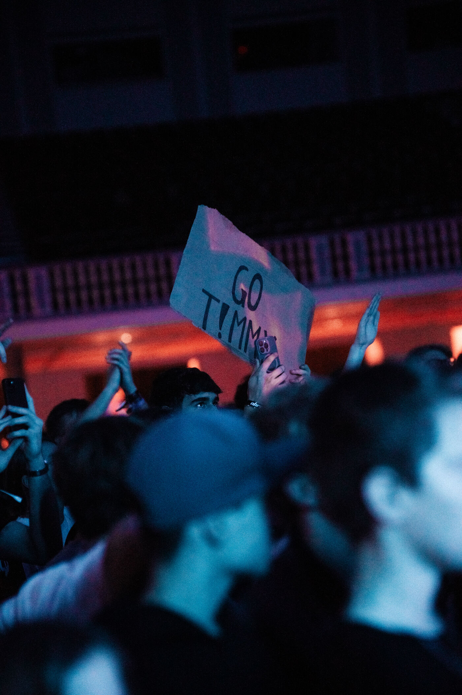
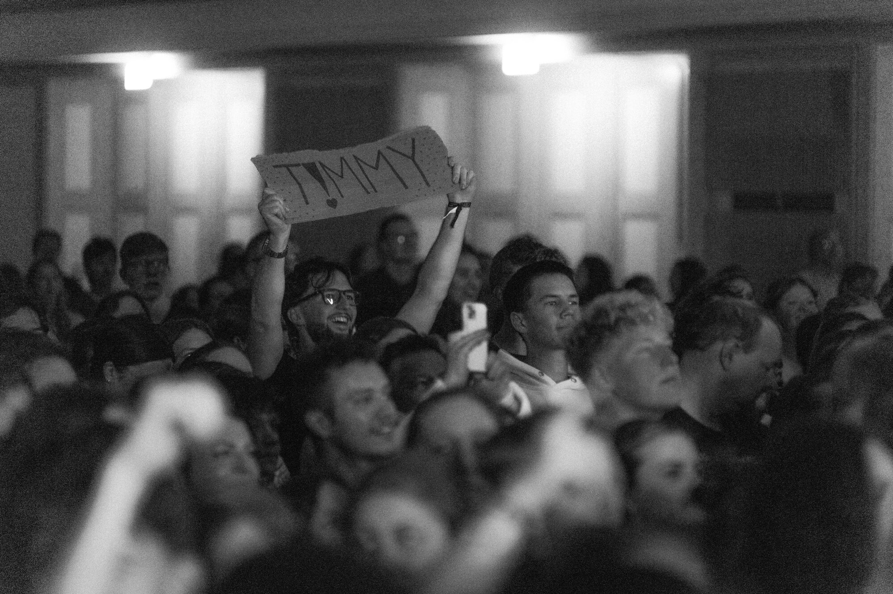

Meine Geschichte
Vom Zweifel
Vom Zweifel
zum Sound.
T!MMY ist aufgewachsen zwischen Kirchenbank und Kopfhörern — zwischen dem, was man ihm erzählt hat, und dem, was er selbst finden musste. Rap war der erste Weg, Gedanken loszuwerden, die sonst nirgendwo hinpassten.
Aus Beats in der eigenen vier Wände wurde mit der Zeit ein eigener Sound: mal Pop-Melodie, mal Rock-Wucht, immer mit einem Kern, der bleibt — die Überzeugung, dass Glaube kein Klischee sein muss, sondern echt klingen kann.
„Ich wollte Musik machen, die man laut aufdrehen kann — und die trotzdem etwas trägt, wenn's leise wird.“


Danke, dass ihr da seid.